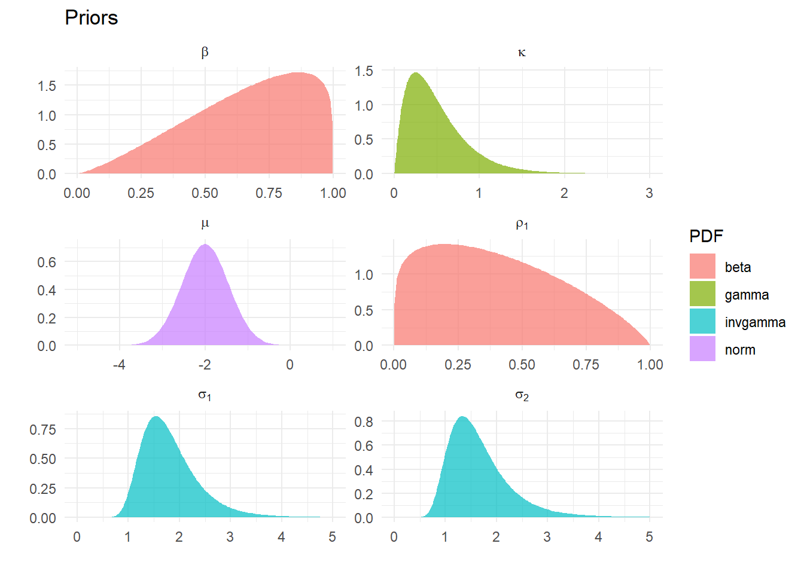
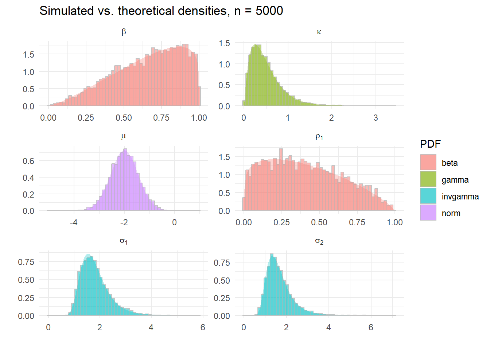
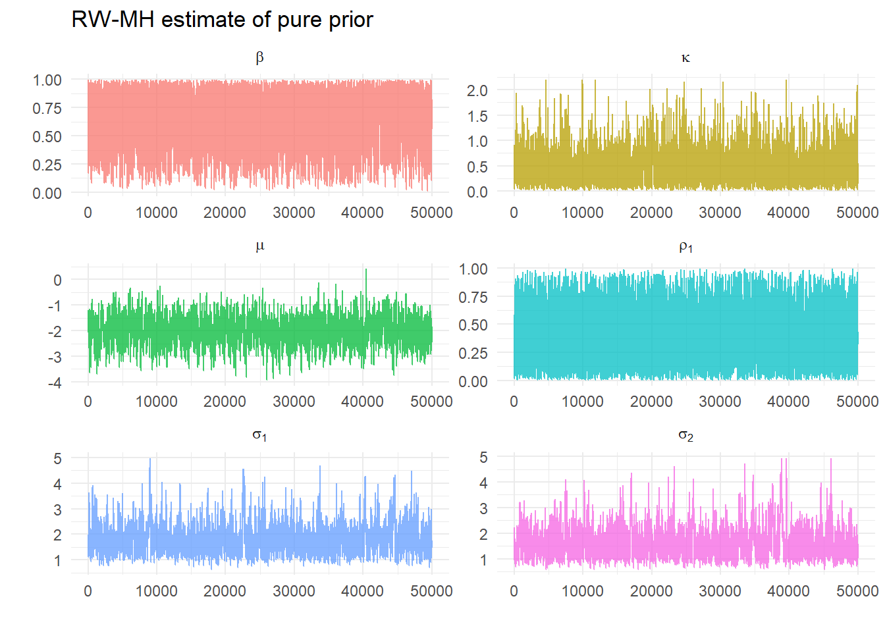
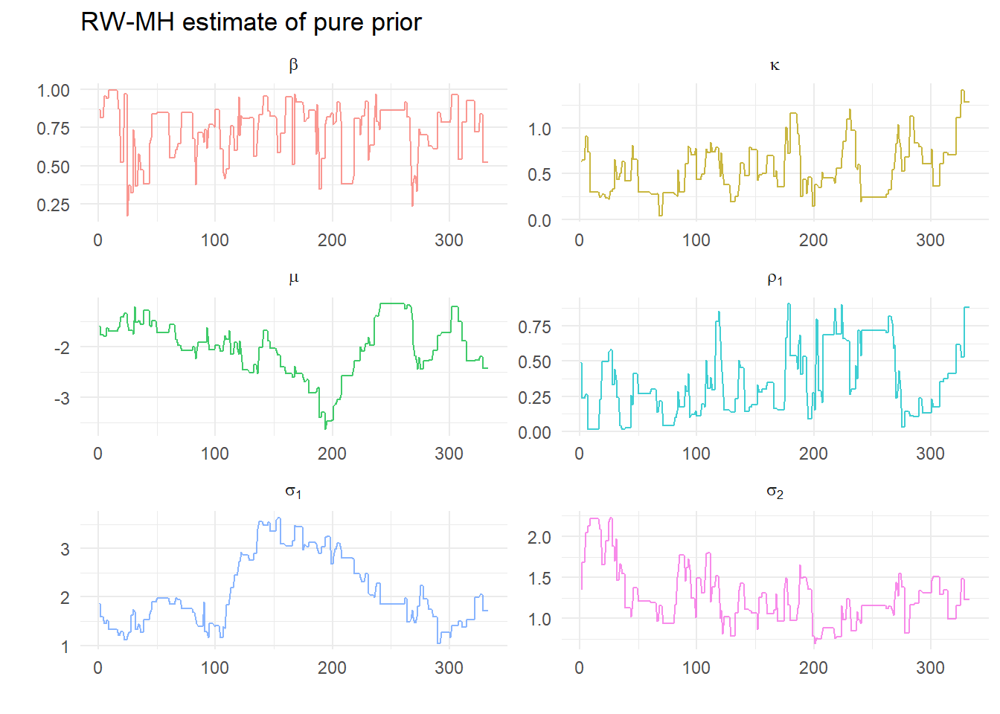
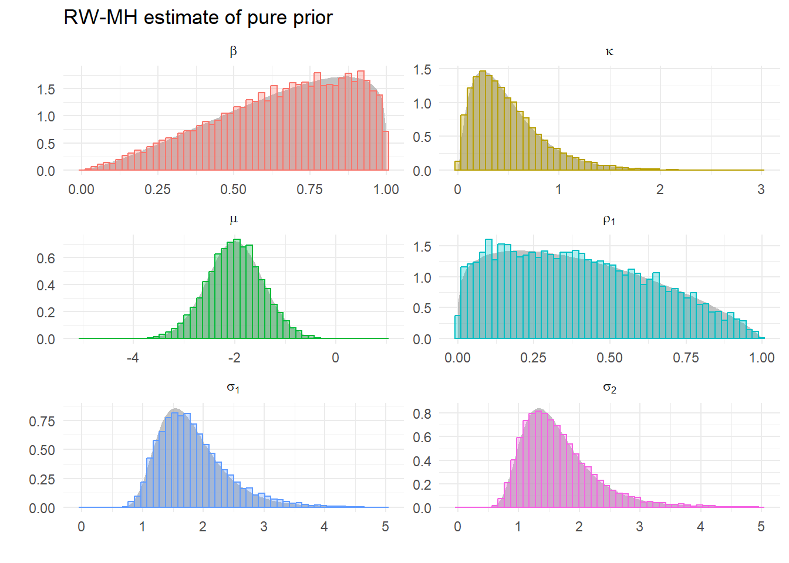
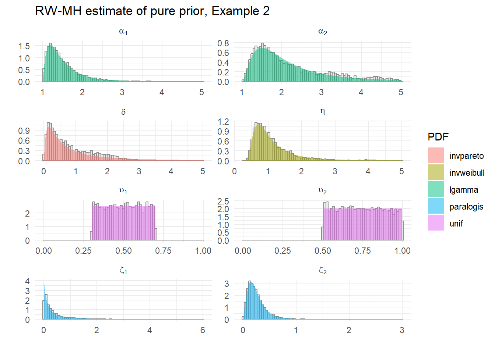

What if we have a posterior density that is too complicated to factor into a full set of conditional densities? Recall that Gibbs Sampling is a procedure that generates marginal densities from conditional densities. What if we don’t have conditional densities?
Why can’t we use Gibbs for DSGEs?
Say a model only has two unknown parameters, \(\alpha\) and \(\gamma\). Any predictions of that model conditional on them is: \[\begin{equation}
y = f(X,\ \alpha,\ \gamma)
\end{equation}\] The likelihood of that model \[\begin{equation}
\mathcal{L}(\alpha,\ \gamma\ | \ y,\ X)
\end{equation}\] is readily available but the conditional density of say, \(\alpha\)\[\begin{equation}
\mathcal{P}(\alpha\ | \ y,\ X,\ \gamma)
\end{equation}\] typically isn’t. This is because the predictive model \(f(\cdot)\) depends on all the parameters through the reduced form solution used in DSGEs even if the underlying model is linear, i.e. the solution in @BK1980. As \(f(X,\ \alpha,\ \gamma)\)always depends on both \(\alpha\) and \(\gamma\) it is difficult to find an appropriate conditional likelihood which isolates one of them.
Can we derive a technique that generates marginal densities from a joint density? Turns out we (perhaps surprisingly) can, using the Metropolis-Hastings algorithm.
Target density
We’ll derive the simplest posterior density that we can use in an exercise, but we begin with a more general case. Consider a posterior likelihood that is the product of a likelihood and \(k\) prior densities, say \[\begin{equation}
\mathcal{H}(\theta\ | \ y) = \mathcal{L}(\theta\ | \ y)\times \mathcal{P}_1(\theta_1)\times \mathcal{P}_2(\theta_2)\times \mathcal{P}_3(\theta_3)\times ...\times \mathcal{P}_k(\theta_k)
\end{equation}\] This is the target density. How can we estimate the densities of the underlying \(\theta_i\) from this posterior alone? This (somewhat amazingly) turns out to be rather simple.
The trick is to simulate draws for all the elements of \(\theta\) from the target density – despite not having a generating function to draw from the density – and then estimating the marginal densities from the resulting series.
Simplified problem: estimating (known) prior
As the aim is to introduce MH in as simple a context as possible, we will sample from a posterior distribution for which we don’t have an appropriate random number generator but for marginal distributions that we do. This means we can compare analytical and estimated results.
We will try an estimate the marginal distributions for the priors alone; essentially \(\mathcal{H}(\theta\ | \ y)\) where \(\mathcal{L}(y\ |\ \theta)\) is flat for all values of the prior so \[\begin{equation}
\mathcal{H}(\theta\ | \ y) = \mathcal{P}_1(\theta_1)\times \mathcal{P}_2(\theta_2)\times \mathcal{P}_3(\theta_3)\times ...\times \mathcal{P}_k(\theta_k)
\end{equation}\] This means we know what the marginals should look like – they are just the priors!
Assume there are \(k\) unknown parameters with a prior density set by the investigator, such as \[\begin{equation}
\mathcal{P}(\rho_1) \sim \text{Beta}(1.2,1.8)
\end{equation}\] subject to the arbitrary bounds that \(0.001 < \rho_1 <0.999\).
We have \(k\) of these, so in any code we could specify this in a matrix where each prior is specified in a row containing a name, a PDF type, the parameters of the PDF, as well as a lower and upper bound.
Example 1
First example: target density is the product of six parameters densities of four types: Normal, Gamma, Inverse Gamma and Beta. Any suitable density could be used as a prior, so the Uniform, say, or the Inverse Weibull or Log Gamma could be slotted in – and we will later on. All that is required is that the some function exists to evaluate the density. Obviously we could generalize this to one or three or more parameter distributions with appropriate code.
For example we could fit a Skew-\(t\) say, as long as we can evaluate the (log) density for this 4 parameter distribution. See @LossModels for a very comprehensive list of densities we could use – I cannot recommend this highly enough.
name
lb
ub
PDF
p1
p2
beta
0.001
0.999
beta
2.3
1.200
rho[1]
0.001
0.999
beta
1.2
1.800
kappa
0.001
3.000
gamma
2.0
4.000
mu
-5.000
1.000
norm
-2.0
0.550
sigma[1]
0.001
5.000
invgamma
12.0
0.050
sigma[2]
0.001
5.000
invgamma
9.0
0.075
Parameters of six densities used in Example 1
Analytic densities

Plots of the theoretical densities given parameters in Table
Random draws

True density known so we can draw from an appropriate random number generator
Estimating the marginals from the joint density
First we need to understand the estimation procedure. The MH algorithm uses only information from the posterior to estimate the marginal processes that generated it, in stark contrast with Gibbs Sampling that uses conditional densities to approximate the unconditional one and then back out the marginals.
Metropolis-Hastings
A thorough explanation can be found in @Chib or @BDA, and here we describe the procedure without proof. Our aim is to draw samples from some distribution \[
\mathcal{H}(\theta)
\] where a direct approach is not feasible, because we don’t have a random number generator. The Metropolis-Hastings algorithm requires that we can evaluate this posterior density at some arbitrary points. As the form of the marginals is (potentially) unknown, we draw values from some arbitrary density and decide whether it looks like it came from the marginals that generated the posterior. \(\mathcal{H}(\theta)\) is typically the posterior density where this distribution is far too complex to directly sample.
This indirect approach is to specify a candidate density\[
q(\theta^{k+1}|\theta^k)
\] from which we can make candidate draws. Given some value for the parameters \(\theta^k\), we can randomly generate new values, which may or may not be independent of this draws.
The MH algorithm requires that we are able to evaluate \(\frac{H(\theta^{k+1})}{H(\theta^k)}\), and then draw a candidate value \(\theta^{k+1}\) from \(q(\theta^{k+1}|\theta^k)\). We then accept this candidate value with the probability \[
\alpha = \min \left(\frac{H(\theta^{k+1})/q(\theta^{k+1}|\theta^k)}{H(\theta^k)/q(\theta^k|\theta^{k+1})}, 1\right)
\] Practically, this requires we compute \(\alpha\) and draw a number \(u\) from \(U(0,1)\), and if \(u<\alpha\) accept \(\theta^{k+1}\) otherwise keep \(\theta^k\).
Simplification
The random walk version of the algorithm takes the specific candidate density \(q(\theta^{k+1}|\theta^k)\) as \[
\theta^{k+1} = \theta^k + \epsilon_t
\] where \(\epsilon_t\sim N(0,\Sigma)\) for some \(\Sigma\) which we need to choose. This is a simple vector-random walk. Let \(\theta^k\) be some existing draw and \(\theta^{k+1}\) be a new draw. We can write \[
\epsilon_t = \theta^{k+1}-\theta^k
\] then \[
P(\epsilon_t) = P(\theta^{k+1}-\theta^k)
\]
Because this is a normal density (which is symmetric) then \[
P(\epsilon_t) = P(-\epsilon_t)
\] Symmetry implies an acceptance probability of \[
\frac{H(\theta^{k+1})}{H(\theta^k)}
\] as \(q(\theta^{k+1}|\theta^k) = q(\theta^k|\theta^{k+1})\) so these terms cancel.
Algorithm
Step 1 Draw a candidate value \(\theta^{G+1}\) from \(q(\theta^{k+1}|\theta^k)\), specifically \(\theta^{k+1} = \theta^k + \epsilon_t\) where \(\epsilon_t\sim N(0,\Sigma)\)
Step 2 Compute the acceptance probability \[
\alpha = \min \left(\frac{H(\theta^{k+1})}{H(\theta^k)}, 1\right)
\]
Step 3 If \(u\sim U(0,1)\) is less than \(\alpha\), keep \(\theta^{k+1}\), else repeat \(\theta^k\) and discard the new draw
Notes:
The density \(\mathcal{H}(\theta)\) will usually be a posterior, combining the priors and likelihood information;
At present we have no likelihood information, so all we need is a function to evaluate the (log) joint prior.
The simple problem
We have no data (or indeed model) to pass to the posterior function (as there is no likelihood). Generalizing this to incorporate likelihood information is straightforward.
We need to specify the scale of the random walk: assume \[
\Sigma = sI
\] We should choose a value of \(s\) to ensure that the whole parameter space is explored as
if \(s\) too small we don’t walk far enough, and stay too close to potentially only local maxima;
if \(s\) too large may jump over highest density points at every step and take a long time to converge.
We check if it is a suitable value by monitoring the acceptance rate: between about 1/5 and 2/5 fine.
Estimating example 1
Choose some arbitrary initial values at which we can evaluate our posterior likelihood (remembering for this example this only the joint prior). These are 0.9, 0.2, 0.4, -2, 1.5, 1.5. As we have chosen values close to the highest density this evaluates as 0.425433. We choose \(s=0.25\) and do 100000 iterations and discard the first half. For the run that generates the graphs below we get the message:
[1] "Acceptance ratio: 0.33554"
The acceptance ratio is good, so we plot the draws:

Plots of the 50,000 draws
or just the first few to better see the algorithm in action:

Plots of first 333 draws
Clearly there are some repeat values. What do the estimated densiites from each of these sequences look like?

Histograms of draws and theoretical priors
Pretty good! Compare this with the sequence of draws we got from the correct random number generators for each density.
Plots of the theoretical densities given parameters in Table 2

Walk a little less \(s=0.125\) (could iterate a little more?)
Matlab example
Here’s a line-by-line example in Matlab™ of two parameters distributed multivariate normal. We can use the Matlab command mvnpdf(b,mu,V) to evaluate the density of any vector \(b\) distributed \(N(mu,V)\). Similar examples can be found in, e.g., @BDA.